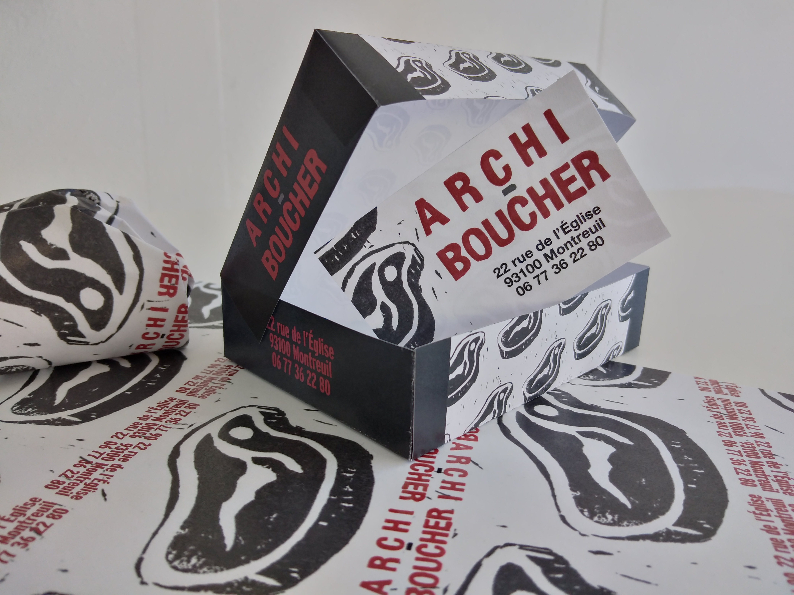

OULIPO
DNMADe 2e année
Produire une affiche rendant hommage au groupe littéraire qu’est l’Oulipo (Ouvroir de littérature potentielle) et à ses soixante ans d’existence.
Les lettres N, I, M et P forment le mot «n’imp», abrévation de l’expression «n’importe quoi»
L'affiche est mise en scène dans une ambiance sombre et inquiétante.
ARCHI-BOUCHER
DNMADe 2e année

Créer l’identité visuelle d’une boucherie chic et haute couture de Montreuil en mettant en avant le produit phare de celle-ci : l’entrecôte maturée.
💀
L’identité créée pour Archi-Boucher se veut de casser les codes de l’identité visuelle de la boucherie pour se démarquer des autres enseignes du même type en mettant en avant la singularité de l’activité et des valeurs de l’entreprise.
Le côté chic est exprimé par l’association des couleurs noire et rouge et le côté haute-couture est illustré à travers le décalage qui se crée avec les codes classiques à travers l’utilisation d’une typographie sans sérif et de la linogravure. Ces deux parti-pris graphiques témoignent d’un retour aux sources et d’une authenticité revendiquée par Archi-Boucher.
-MUSIK-
DNMADe 1ère année
Le nouveau label musical -MUSIK- lance une collection de 33 tours collectors intitulée «RÉINVENTER LE VINYLE» et demande de réaliser la pochette d’un vinyle de l’album IOWA de Slipknot.
VIKTOR & ROLF
DNMADe 1ère année
Confectionner le carton d’invitation au vernissage de l’exposition rétrospective de Viktor & Rolf au Musée des Arts Décoratifs. Illustrer l’univers excentrique de la marque V&R.
MARATHON
DNMADe 1ère année
Créer l’affiche d’un festival de musique minimaliste, avec pour contrainte l’uttilisation seule de valeurs de gris.
AUTO-ÉCOLE NÉO
Freelance
Réaliser le logo d’une auto école locale. Faire apparaître le dynamisme de l’entreprise ainsi que le but principal du client : obtenir le permis de conduire.